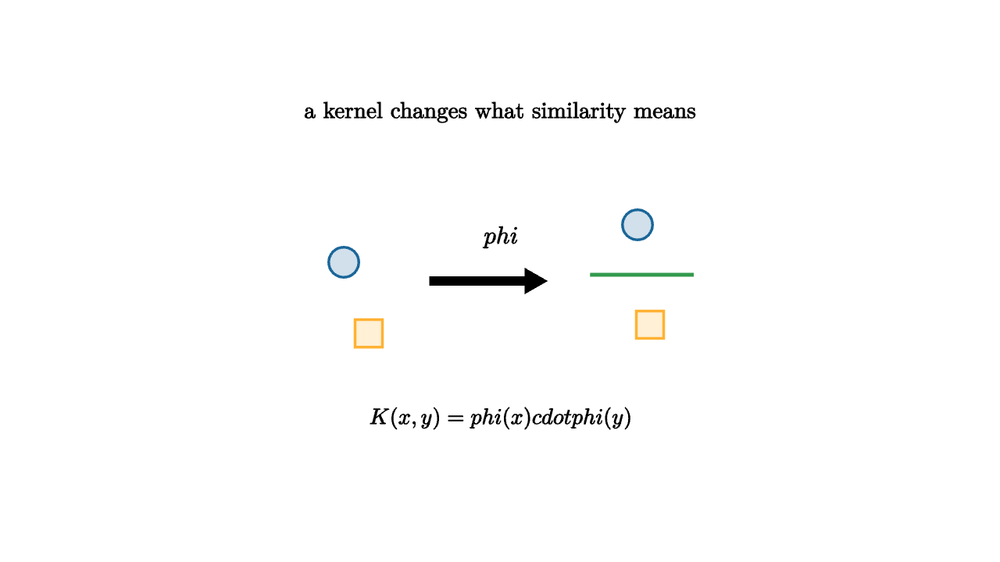

Many algorithms only need dot products. A linear classifier compares $w\cdot x$. PCA, nearest-neighbor variants, support vector machines, and ridge regression all contain inner products at key steps. A kernel changes the dot product so that linear methods can act in a richer feature space.
A kernel is a function
where $\phi$ maps the original input into a feature space. The useful trick is that we can often compute $K(x,y)$ directly without writing down every coordinate of $\phi(x)$.

source
let soft = |col, amount| lerp(WHITE, col, amount)
mesh kernel = [
center{1.35u} Text("a kernel changes what similarity means", 0.66),
center{1.25l + 0.15u} fill{soft(BLUE, 0.2)} stroke{BLUE, 2} Circle(0.12),
center{1.05l + 0.42d} fill{soft(ORANGE, 0.2)} stroke{ORANGE, 2} Square(0.22),
stroke{BLACK, 3} Arrow(0.55l, 0.35r),
center{0.0r + 0.35u} Tex("\\phi", 0.7),
center{1.1r + 0.45u} fill{soft(BLUE, 0.2)} stroke{BLUE, 2} Circle(0.12),
center{1.2r + 0.35d} fill{soft(ORANGE, 0.2)} stroke{ORANGE, 2} Square(0.22),
stroke{GREEN, 3} Line(0.72r + 0.05u, 1.55r + 0.05u),
center{1.1d} Tex("K(x,y)=\\phi(x)\\cdot\\phi(y)", 0.64)
]The polynomial kernel
acts like it includes squares and pairwise interactions. A linear model in that feature space can draw curved boundaries in the original space. The radial basis function kernel
makes nearby points highly similar and far points weakly similar. It creates a geometry where local neighborhoods matter strongly.
source
let soft = |col, amount| lerp(WHITE, col, amount)
"Raw Coordinates"
mesh scene = [
center{1.3u} Text("raw coordinates can hide a simple pattern", 0.62),
center{0r} fill{soft(BLUE, 0.16)} stroke{BLUE, 2} Circle(0.25),
center{0.85r} fill{soft(ORANGE, 0.16)} stroke{ORANGE, 2} Square(0.22),
center{0.85l} fill{soft(ORANGE, 0.16)} stroke{ORANGE, 2} Square(0.22),
center{0r + 0.85u} fill{soft(ORANGE, 0.16)} stroke{ORANGE, 2} Square(0.22),
center{0r + 0.85d} fill{soft(ORANGE, 0.16)} stroke{ORANGE, 2} Square(0.22)
]
play Fade(0.8)
"Feature Space"
scene = [
center{1.3u} Text("features lift points into a better geometry", 0.62),
stroke{BLACK, 3} Arrow(1.1l, 1.1r),
center{1.45l} Tex("(x_1,x_2)", 0.60),
center{1.35r} Tex("(x_1,x_2,x_1^2+x_2^2)", 0.60)
]
play Trans(0.8)
"Kernel Rule"
scene = [
center{1.3u} Text("the kernel computes the lifted dot product", 0.62),
center{0r} Tex("K(x,y)=\\phi(x)\\cdot\\phi(y)", 0.7),
center{1.05d} Text("the algorithm can stay in dot products", 0.62)
]
play Trans(0.8)Kernel methods are a bridge between simple geometry and flexible modeling. They preserve much of the theory of linear methods while changing the shape of the space. Support vector machines use kernels to find large-margin separators in feature space. Kernel ridge regression fits smooth nonlinear functions using similarity to training examples.
The Gram matrix is central. For training points $x_1,\ldots,x_n$, define
This matrix contains all pairwise similarities in the kernel geometry. Learning then depends on $G$ rather than raw coordinates. That is powerful when $n$ is manageable and the feature map would be huge.
Kernels also teach a design habit. Choosing a kernel means choosing a notion of similarity. A string kernel can compare text by shared subsequences. A graph kernel can compare molecular structures. An RBF kernel says local Euclidean closeness matters. These choices encode beliefs about the domain before training starts.
The cost is scale and interpretability. The Gram matrix grows like $n^2$. Predictions often depend on many training examples. The feature space may be hard to explain. Still, kernels remain one of the cleanest ways to see machine learning as geometry: change the dot product, and a familiar algorithm sees a different world.